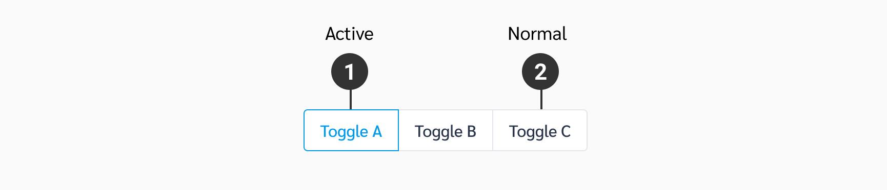

Button Toggle
These group buttons are are single selection and work similar to radio-buttons. There are two-state and three-state button toggles.
Stage
| Types | Purpose |
|---|---|
| Active | เมื่อทำการกดเลือก ปุ่มจะกลายเป็น Active Button |
| Normal | Button Toggle ปกติโดยยังไม่กด จะอยู่ใน Stage Normal |
Spec
Example
The following HTML code is based off the Ahancer Seed
Two-State Toggle
Three-State Toggle
Usage
1. ใช้สำหรับเลือกการแสดงผล content ในแต่ละหัวข้อ (คล้าย Tab) แต่จะมีความสำคัญน้อยกว่า Tab

2. สามารถเพิ่มตัวเลือกได้ตั้งแต่ 2 เมนูขึ้นไป (แต่ไม่ควรเกิน 4 เมนู)

3. กรณีมี Default Active ควรอยู่ด้านซ้ายสุดเสมอ
DO
Default Active เมนูอยู่ด้านซ้ายสุด
DON'T
Default Active เมนูอยู่ที่อันอื่น ไม่ใช่เมนูด้านซ้ายสุด